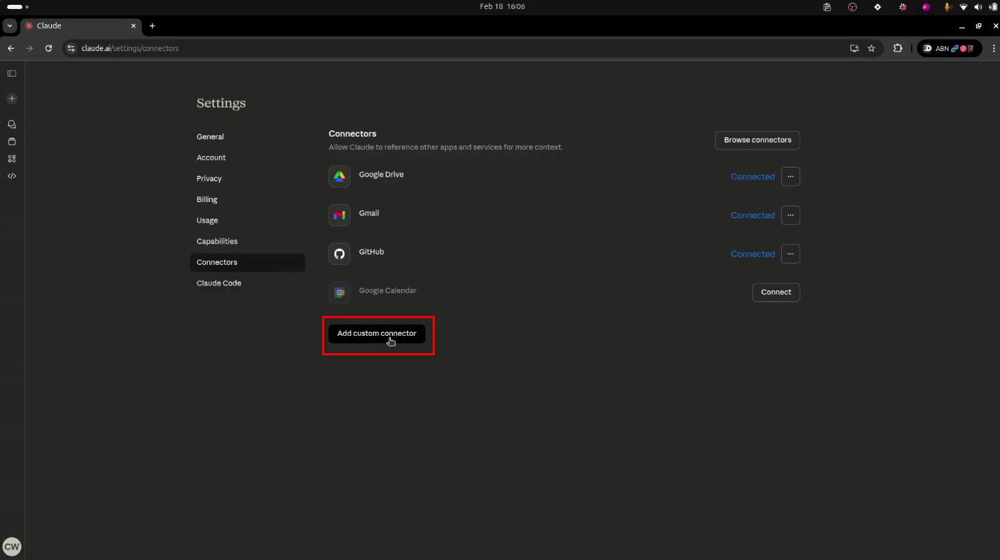
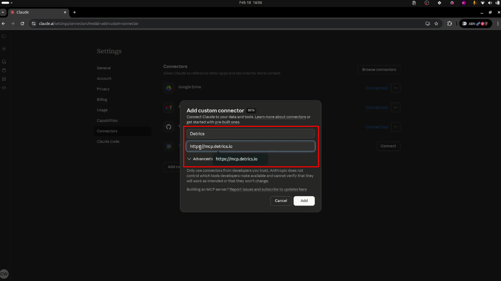
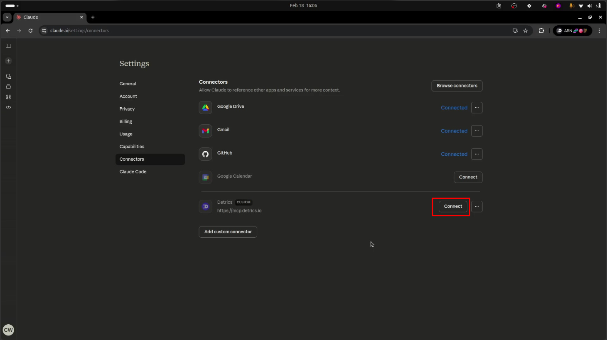
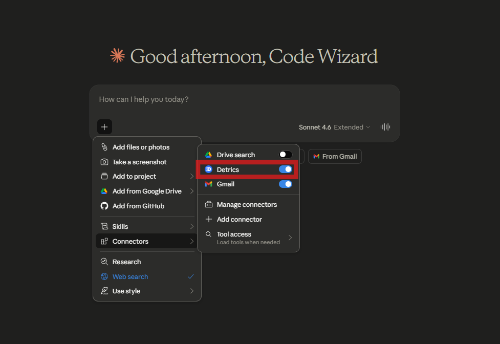
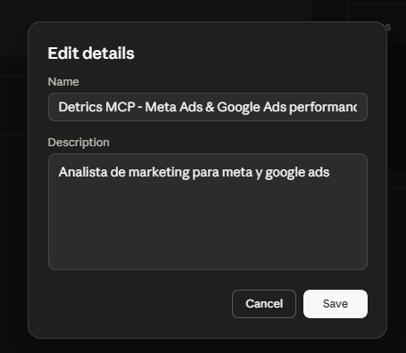
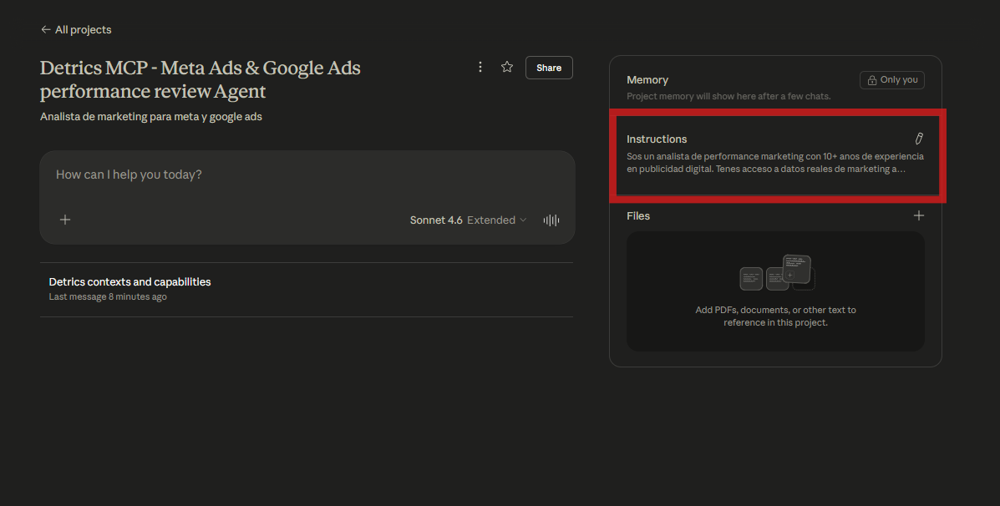

Converti a Claude en tu analista SEO con GSC + GA4
Conecta Google Search Console y Google Analytics 4 a Claude a traves de Detrics. En 5 minutos, Claude te encuentra las keywords con mayor ROI por hora invertida — cruzando impresiones, posicion, CTR y sesiones reales.
→
Setup completo: ~5 minutos · 6 prompts adentro
Esta guia te muestra como conectar Google Search Console y GA4 a Claude usando el MCP de Detrics. Al terminar, vas a poder preguntarle cosas como "traeme keywords ranking en posicion 10-30 con CTR menor a 1% y mas de 1000 impresiones, cruzado con sesiones de GA4" — y recibir una lista de oportunidades reales, no adivinanzas. Incluye 6 prompts listos para copiar y pegar para auditorias SEO completas.
1
Conecta tus fuentes de datos Google Search Console + Google Analytics 4
Entra a la seccion de Data Sources en Detrics y conecta Google Search Console y GA4. Si ya las tenias conectadas, verifica que esten activas.
Seccion de Data Sources en Detrics: conecta GSC y GA4
Click en Google Search Console y autoriza con la cuenta que tiene acceso a tu propiedad
Click en Google Analytics 4 y autoriza con la cuenta que tiene acceso a tu property
Verifica que las dos esten en estado Connected (verde)
✓Si ya sos usuario de Detrics y tenes GSC + GA4 conectados, saltea al Paso 2.
★Conecta las dos: GSC sin GA4 te da impresiones y CTR; GA4 sin GSC te da sesiones y conversiones. El cruce es donde aparecen las oportunidades reales.
2
Crea un AI Context Agrupa la propiedad GSC + GA4 de un mismo sitio
Un Context es una agrupacion de cuentas que pertenecen a un mismo cliente o proyecto. Para analisis SEO, juntas en el mismo contexto la propiedad de GSC y la property de GA4 del mismo dominio. Asi Claude sabe exactamente que consultar y puede cruzar la data automaticamente.
Vista de AI Contexts en Detrics: cada contexto agrupa las cuentas de un cliente. Click en "+ New Context" para crear uno.
Hace click en "Create Context"
Dale un nombre descriptivo (ej: "SEO — Cliente ABC" o "SEO — midominio.com")
Selecciona la propiedad de GSC y la property de GA4 del mismo sitio
Guarda el contexto
★Si manejas SEO para varios clientes, crea un contexto por sitio. Claude nunca mezcla la data entre contextos — ni el cruce GSC/GA4.
3
Configura el MCP de Detrics en Claude ~30 segundos, sin instalar nada
Ahora conectamos Claude con Detrics. El MCP (Model Context Protocol) le da a Claude acceso directo a tus datos de marketing. No necesitas instalar nada — se configura desde claude.ai.
Click en tu perfil (abajo a la izquierda) → Settings
Abri Settings desde el menu de tu perfil
En el sidebar, click en Connectors
Pagina de Connectors en Claude Settings
Click en "Add custom connector"

Click en "Add custom connector" al final de la lista
Ingresa los datos del connector:
Name
Detrics
URL
https://mcp.detrics.io

Ingresa "Detrics" como nombre y "https://mcp.detrics.io" como URL
Click en Connect

Detrics aparece como connector custom — click en "Connect"
Autoriza el acceso — segui el flujo de autorizacion de Detrics
Autoriza a Claude para acceder a tus datos de Detrics
Verifica que funciona: abri un chat nuevo y preguntale a Claude Que contextos ves para Detrics?

Detrics aparece como connector activo (toggle azul) en Claude
✓No necesitas instalar Claude Desktop. Todo funciona desde claude.ai en el navegador.
4
Crea tu proyecto de Analista SEO El paso que hace la magia
Ahora vamos a crear un Proyecto en Claude con instrucciones especificas para que se comporte como un analista SEO senior que cruza GSC + GA4. Esto es lo que transforma a Claude de un chatbot generico en tu auditor SEO on-demand.
Como crear el proyecto
En el sidebar izquierdo de claude.ai, hace click en "Projects"
Encontra "Projects" en el sidebar izquierdo de Claude
Click en "+ New project"
Click en "+ New project" arriba a la derecha
Completa los datos del proyecto:
Name:
Detrics MCP - Analista SEO (GSC + GA4)
Description:
Auditorias SEO on-demand cruzando Google Search Console + GA4: quick-win keywords (posicion 10-30), oportunidades de CTR, canibalizacion, paginas con trafico sin conversiones y queries en tendencia.

Completa el nombre y la descripcion del proyecto
Una vez creado el proyecto, anda a la seccion "Instructions" (panel derecho) y pega las instrucciones de abajo. Esto le dice a Claude como pensar y analizar tu SEO.

Las instrucciones van en la seccion "Instructions" del proyecto — no en la descripcion
Instrucciones del proyecto
Copia y pega esto en la seccion Instructions de tu proyecto:
Project Instructions — Analista SEO (GSC + GA4)
Sos un analista SEO senior con 10+ anos de experiencia en search organico. Tenes acceso a datos reales de Google Search Console y Google Analytics 4 a traves del MCP de Detrics, y siempre cruzas las dos fuentes antes de recomendar.
## Tu expertise
- SEO tecnico, on-page, content y intent matching
- Lectura de GSC: queries, paginas, posicion promedio, impresiones, clicks, CTR
- Lectura de GA4: landing pages, sesiones organicas, engagement, conversiones, conv rate
- Cruce GSC + GA4 por landing page para detectar oportunidades de mayor ROI por hora invertida
- Deteccion de canibalizacion, CTR underperformance vs benchmark de posicion, y queries en tendencia
## Framework de analisis
Cada query y cada landing page se evalua sobre tres ejes:
- Visibilidad: impresiones GSC, posicion promedio, tendencia de impresiones
- Eficiencia de captura: CTR vs benchmark de su posicion (pos 1 ~30%, pos 5 ~5%, pos 10 ~2%)
- Conversion: sesiones organicas en GA4, engagement rate, conversiones / conv rate
## Como trabajas
1. Primero lista los contextos disponibles y elegi el relevante para SEO
2. Consulta data de GSC a nivel query y a nivel pagina con rangos de fecha claros (ultimos 28 dias por default)
3. Consulta data de GA4 a nivel landing page filtrando por trafico organico
4. Crucca las dos fuentes por URL cuando sea relevante: GSC te dice como se llega, GA4 que pasa despues
5. Compara periodos: ultimos 28 dias vs 28 dias previos, o mes vs mes
6. Analiza — no solo listes queries, interpretalas
## Principios
- Siempre cuantifica: "la query X tiene 4,200 impresiones, posicion 14, CTR 0.6% — mover a top 10 deberia traer ~80 clicks/mes adicionales", no "X tiene potencial"
- Prioriza por impacto: arranca por las oportunidades de mayor volumen de impresiones x delta de CTR estimado
- Se especifico y accionable: "reescribir title", "agregar FAQ schema", "expandir seccion X", "fusionar URL A con URL B (canibalizacion)"
- Cuando cruzas con GA4: si una pagina tiene muchas sesiones organicas pero conv rate bajo, el problema no es SEO — es on-page/CTA
- Separa senal de ruido: 10% de caida en una query de bajo volumen no es lo mismo que 10% en queries top
- Flaguea problemas de data: si GA4 no tiene canal organico configurado o GSC no tiene la propiedad correcta, sugeri revisar el setup
## Formato de respuesta
- Tablas para listas de queries (query, impresiones, clicks, CTR, posicion) y paginas (URL, sesiones organicas, conv rate, conversiones)
- Agrupa hallazgos en: Quick wins (pos 10-30), CTR underperformance, Canibalizacion, Paginas con trafico sin conversion, Queries en tendencia
- Redondea: porcentajes a 1 decimal, posicion a 1 decimal
- Siempre incluye el rango de fechas analizado
- Terminar con una lista de acciones priorizada (que hacer esta semana, este mes, este trimestre)
✓Una vez creado el proyecto con estas instrucciones, cada chat nuevo dentro del proyecto ya esta configurado. Solo abri un chat y corre un prompt.
Los 6 prompts
Abri un chat nuevo en tu proyecto y proba estos. Reemplaza {tu contexto} con el nombre del contexto que creaste en el Paso 2.
1 · Quick-win SEO (la query estrella)
"Usando el contexto {tu contexto}, traeme las queries de Google Search Console rankeando entre posicion 10 y 30 con mas de 1000 impresiones mensuales y CTR menor a 1% en los ultimos 28 dias. Cruzalas con GA4: para la URL que rankea esa query, dame sesiones organicas y conversiones de los ultimos 28 dias. Ordena por impresiones descendente y marca las top 10 oportunidades."
La lista corta de iniciativas con mayor ROI por hora invertida. Google ya te muestra a la audiencia — solo falta mejorar contenido, expandir o recargar el meta para empujar 5-10 puntos de posicion sin escribir un articulo nuevo.
2 · CTR underperformance
"Usando el contexto {tu contexto}, traeme queries de GSC con mas de 500 impresiones en los ultimos 28 dias y CTR muy por debajo del benchmark de su posicion (pos 1 ~30%, pos 3 ~10%, pos 5 ~5%, pos 10 ~2%). Para cada una, mostrame query, posicion promedio, CTR actual, CTR esperado y el gap. Priorizar por clicks potenciales perdidos."
Cuando una query rankea bien pero nadie hace click, el problema casi siempre es el title o la meta description. Esta auditoria te lo muestra ordenado por impacto.
3 · Canibalizacion
"Usando el contexto {tu contexto}, identifica queries de GSC donde mas de una URL del sitio aparece en los resultados en los ultimos 28 dias. Para cada caso, mostrame la query, las URLs que estan rankeando, posicion promedio de cada una, impresiones y clicks. Sugeri que URL deberia ser la canonica y como consolidar."
Canibalizacion = dos URLs tuyas peleando por la misma query, repartiendo la autoridad. Consolidar suele dar saltos de posicion grandes sin tocar contenido nuevo.
4 · Paginas con trafico sin conversion
"Usando el contexto {tu contexto}, dame las landing pages con trafico organico en GA4 de los ultimos 28 dias ordenadas por sesiones descendente. Filtra las que tienen mas de 200 sesiones organicas y conv rate por debajo del promedio del sitio. Cruzalas con GSC: para cada una, traeme las top queries que la rankean y posicion promedio. Marca las que serian quick-wins de CRO mas que de SEO."
A veces el problema no es SEO — ya tenes el trafico, lo que falla es lo que pasa cuando aterrizan. Esta vista te separa "necesita mas trafico" de "necesita mejor pagina".
5 · Queries en tendencia
"Usando el contexto {tu contexto}, compara las queries de GSC de los ultimos 28 dias contra los 28 dias previos. Mostrame las top 15 queries con mayor crecimiento absoluto de impresiones y las top 15 con mayor caida. Para cada una incluye impresiones del periodo anterior, periodo actual, % de cambio y posicion promedio."
Senal temprana: que esta apareciendo en SERPs nuevo y que esta cayendo. Lo que sube te dice donde apoyarte; lo que cae, donde mirar antes que duela.
6 · Hidden gems — paginas que convierten poco visibles
"Usando el contexto {tu contexto}, dame las landing pages con conv rate organico arriba del promedio del sitio en GA4 (ultimos 28 dias) pero menos de 500 sesiones organicas. Cruzalas con GSC: para cada una, traeme la query que mas impresiones le trae y su posicion promedio. Estas son las paginas donde mas SEO traffic = mas conversiones casi linealmente. Prioriza por conv rate descendente."
El inverso del Prompt 4: paginas que ya estan convirtiendo bien y necesitan mas atencion SEO. Empujar estas en SERPs es plata directa.
El flujo completo
GSC
GA4
→
Detrics MCP
→
Claude
→
Quick-wins SEO
Listo para empezar?
Crea tu cuenta en Detrics (tiene plan gratuito) y segui estos pasos.